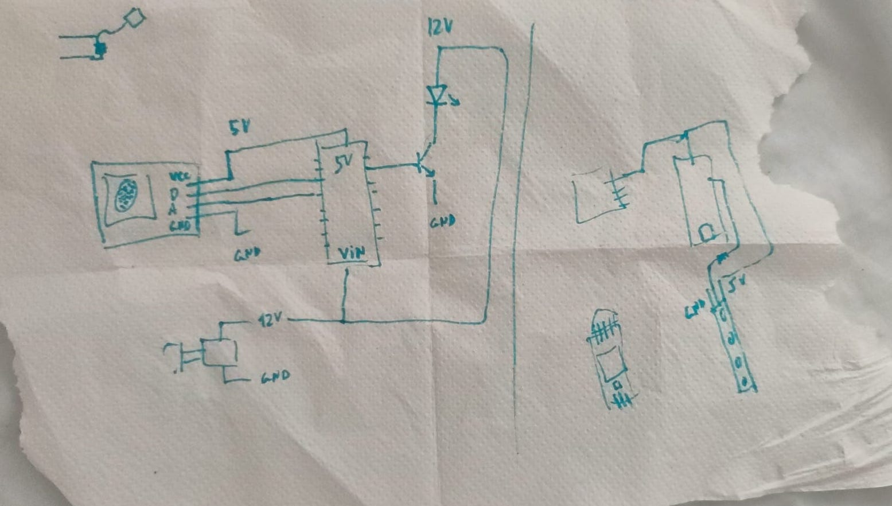
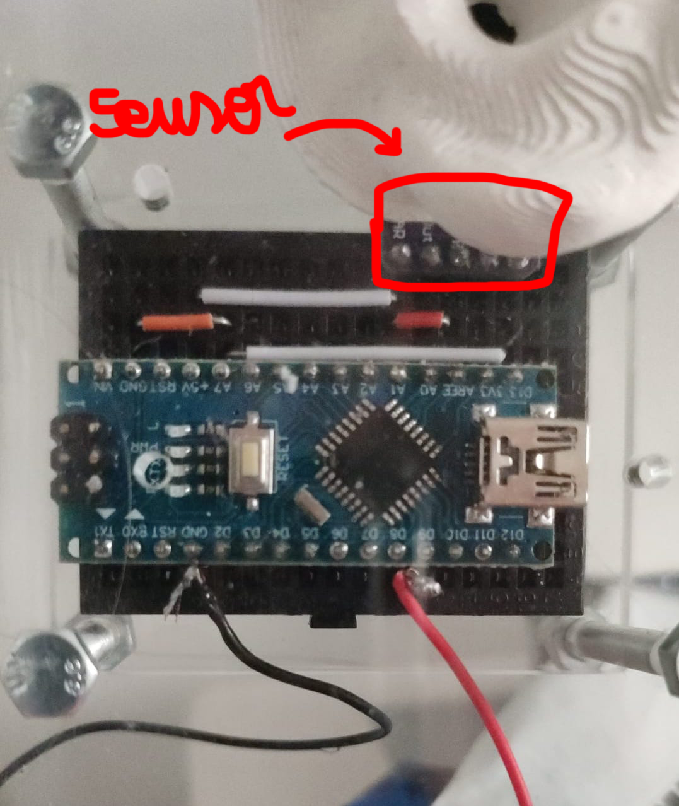

Process images
 Week 06 reflections.
During this week I designed the PCB that I need for one of my master's thesis artifacts. I started the week with the intention to have a sensorial interaction through the Arduino Nano. As the input, I choose a sound sensor/Microphone Amplifier With AGC (MAX9814) because I found the default Arduino sound sensors too difficult to be exact in the noise lecture.
As output, I wanted to control the intensity of a LED depending on the analog reading of the noise. In summarizing, I wanted to make a fading LED system that depends on the noise of the environment.
At first, I tried to use a normal 220V LED bulb and I made the first circuits with the idea of placing an outside energy supplier and controlling the bulb with a PWM pin and a transistor. After some trials, I realized that making fading with a bulb could work at the beginning but not as a long-term artifact. I started thinking about LED strips or high-intensity LED, finally, I went for the LED strips that work with 5V.
At this moment I simplified so much the circuit because I didn’t need anymore an external energy supplier or a transistor. The only thing I needed to take into account was the PWM pin and the resistors. Here I have the circuit schematics and the circuit working on a breadboard.
Final reflections; During this week I realized how complicated and simple a circuit could be if you have the proper elements or not, I spent a lot of time trying to figure out which transistor to buy and reading so many datasheets when the reality was that make that circuit didn’t have any sense. I have learned how to read a datasheet, which I think is the 70% of the knowledge I need to start doing circuit schematics. It was a stressful but fun week.